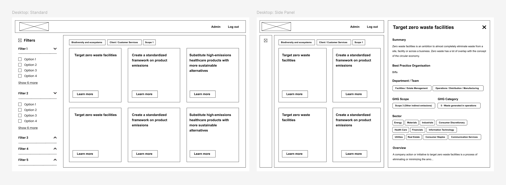

A platform to find relevant, best practice actions to cut carbon
Company
Giki Social Enterprise Ltd.
Product
Giki Library
Platform
Web
Create a customised plan of actions, based on relevance and requirements. Actions can be exported to form an action plan / transition plan.
The transition actions library is a concept designed to help organisations transition to net zero. It provides the organisation with over 500 best practice actions from around the world which are categorised by scope, industry, impact, complexity and cost.
The goal for this project is to research the best methods to display over 500 actions and allow users to customise their plan of action. This has required extensive market research as well as investigation into best UX and UI practices such as filtering, sub navigation and usability.
The transition actions library is currently under development.
2024 © Scott McLintock. All rights reserved.